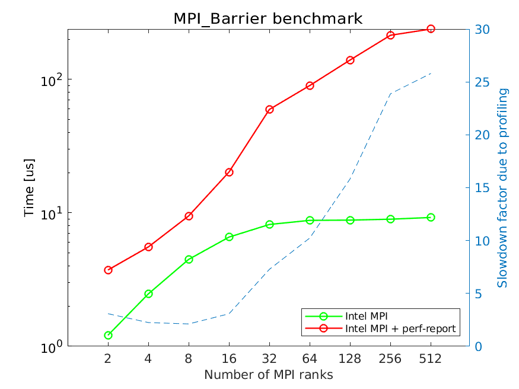
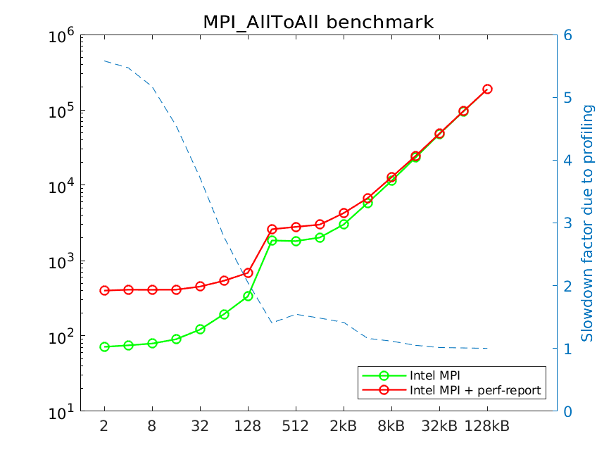

Quantifying the profiling overhead¶
As most performance evaluation tools, Arm Performance Reports work by sampling the running code to obtain statistical information about what the code is doing. The sampling activity does introduce overheads, which can affect the performance of the inspected code. This may be an important aspect, which the users must be aware of when using any performance evaluation tool. The overhead is problem specific, as demonstrated by the example analyses: from little to no overhead (STREAM benchmark, LINPACK benchmark) to factor 26 slowdown (OSU benchmark).
To understand how ARM Performance Reports affects the MPI performance
we investigate the performance of osu_barrier with and without
profiling on up to 512 cores and 32 compute nodes (maximum 16 ranks
per compute node). The following figure shows the run time in
micro-seconds (us) of a single MPI_Barrier call for profiled and
non-profiled runs.

For up to 32 ranks each compute node runs only a single MPI rank. After that, multiple MPI ranks are started on each compute node. The figure demonstrates that the profiling overhead grows significantly with increasing number of MPI ranks, while the cost of the barrier depends mostly on the number of compute nodes and remains roughly constant for more than 32 MPI ranks. The profiling overhead is smallest with up to 16 MPI ranks, and grows significantly from that point on.
While MPI_Barrier is a very important and often used collective, it
is latency limited (no user data is sent, nor received). The following
figure analyzes profiled and non-profiled performance of
osu_alltoall.

For smallest message sizes the overhead is significant (factor 5-6). However, for 8KB and larger messages the overhead is essentially gone. This is because for small message sizes the time required to transfer a message is comparable or lower than the data collection time used by the profiler. As messages grow, the actual data transfer becomes much more time consuming. Hence, depending on the application and the specifics of the MPI communication, profiling will, or will not influence the application runtime.